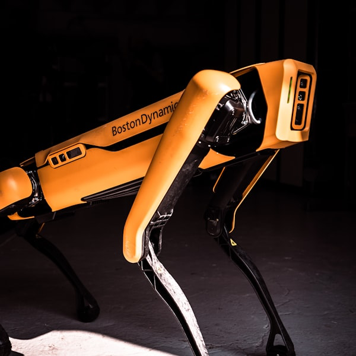

June 11, 2026
Meet Pupper, the Open-Source Robot Dog
Ankush is a PhD candidate in Robotics at Stanford University. Meet Pupper: an open-source quadruped robot built at Stanford that can walk, see, listen, and respond to the world around it.

Meeting Announcement
- When: June 11, 2026, 7:00 to 9:00pm
- Where: Artisans Asylum (96 Holton Street, Boston, MA 02135))
- Register: Register
Agenda
- 7:00 Mingle, network, show and tell
- 7:30 Lightning Talks
- TBD
- TBD
- 7:45 Featured Speaker: Ankush Dhawan
- 8:30 Q&A and Open Discussion
- 9:00 End of formal meeting
Featured Talk
Meet Pupper, the Open-Source Robot Dog
Meet Pupper: an open-source quadruped robot built at Stanford that can walk, see, listen, and respond to the world around it. Born as a student project and now in its third generation, Pupper has become the centerpiece of Stanford's CS123 course, a teaching platform for AI-enabled robotics, and through the Dr. Pupper project at Stanford Medicine, a companion for children recovering in the hospital.
"This talk tells Pupper's story through three pillars: how it moves, how it sees, and how it decides what to do."
We'll trace the evolution from a wobbly first prototype to a robot dog that learns to walk in simulation, recognizes objects in real time, and takes natural-language instructions like "follow that person" or "go find the ball." Along the way, we'll look at the design choices that make Pupper distinctly playful rather than industrial, and the moments, like a post-transplant patient taking their first walk alongside a robot dog, that hint at what embodied AI can be when it's built with intention.
By the end, you'll be well acquainted with Pupper and have a deeper appreciation for the exciting ways AI-enabled robots are beginning to shape both the classroom and the hospital room.
Speaker: Ankush Dhawan
Ankush is a PhD candidate in Robotics at Stanford University, where his research spans manipulation, tactile sensing, and novel robotic hardware. Ankush has been a main contributor for teaching CS123: A Hands-On Introduction to Building AI-Enabled Robots, and has helped transform Pupper from a robotics club project into a full undergraduate course that has now taught over 150 students. He also co-leads Dr. Pupper, an initiative with Stanford Children's Hospital that brings AI-enabled robot dogs to pediatric patients. He is excited to expand Pupper to many more institutions and help sponsor more robotics projects through Hands-On Robotics.
More about Ankush: ankushdhawan5812.github.io